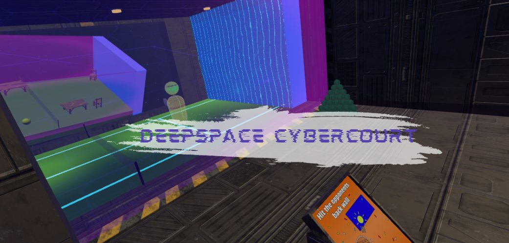

1. Introduction
Deepspace Cybercourt is a virtual reality (VR) sports experience set in a futuristic, sci-fi world. This VR game combines elements of tennis and racket gameplay, with players competing against AI (NPC) opponents in a fast-paced VR arena. Players score points by hitting the ball into the opponent's wall while defending their own wall.
This project aimed to create a VR experience that enhances physical immersion through embodied interaction, responsive physics systems, and replayable competitive gameplay. Players can choose between two types of rackets: a conventional tennis racket and a unique paddle racket, each offering slightly different gameplay and interaction styles.
The core gameplay interaction included a swinging motion of a racket to hit a tennis ball, rallying with an AI agent, and playing matches against it. To enhance player engagement and immersion through gameplay, SFX, VFX, motion systems, and environmental effects were implemented.
2. Prototype Implementation
The prototype of Deepspace Cybercourt was built using Unity version 6000.0.40f1 to present a VR experience with physics-based mechanics. The core gameplay involves players hitting tennis balls towards the opposing NPC's wall using a racket they chose. The goal is to score against the NPC while preventing the NPC from scoring by letting the ball hit the wall on the player's side. Players are able to pick up the rackets using grip-based input, allowing them to swing the racket as they would in real life during gameplay.
The player's main method of locomotion is through teleportation with the right joystick to blue spots in the environment, with an additional locomotion option using the left joystick to walk. Although initially unintended, players are also able to double jump using the controller buttons.
Multiple feedback systems were implemented to increase immersion and juice, such as particle effects and audio feedback when the ball interacts with the rackets, racket-swing audio, and ball-bounce audio. The game also implements UI systems — tutorial posters and onboarding orbs — to improve player experience and gameplay readability.
The environment adopted a sci-fi industrial visual style designed to create strong spatial readability while reinforcing immersion and atmosphere. Environmental scale, interaction zones, and object placement were tested in VR to keep interactions comfortable across different player heights and play spaces. The enclosed space was refined with changes to the skybox and environment materials for a more open-space feel.
The NPC opponent functioned as both a gameplay challenge and an interaction facilitator, continuously returning the ball toward the player to sustain the gameplay loop and reinforce the core racket mechanics.
Performance optimisation was considered throughout development: simplified geometry, regulated environmental scope, reduced visual complexity, and optimisation-conscious asset usage supported stable VR performance and reduced discomfort from inconsistent frame rates.

3. Original Concept to Final Prototype
The original concept for Deepspace Cybercourt was a seated VR arcade tennis experience where players controlled a wheelchair using physical hand movements while aiming and striking the ball with a racket. The intended player experience was anticipation, competition, thrill, and a new perspective on sports through embodied wheelchair movement and racket gameplay.
As development progressed, the concept evolved into a broader VR racket-sport prototype set within a sci-fi industrial arena. The final prototype retained the original focus on embodied movement, racket interaction, NPC opposition, and competitive rally gameplay, but several features changed due to technical scope, playtesting outcomes, and implementation constraints.
| Original Concept | Final Prototype Implementation | Reason for Change |
|---|---|---|
| Seated wheelchair tennis experience | Standing/seated VR racket arena with joystick, teleportation, jump, and double-jump movement | Wheelchair locomotion was technically complex and difficult to implement reliably within the project timeframe. The final movement system allowed broader testing and more immediate gameplay feedback. |
| Players physically push wheelchair wheels to move | Players move using joystick locomotion, teleportation points, and jump/double-jump mechanics | Playtesting highlighted the need for comfort options and responsive movement. Jumping also created emergent “smash” gameplay that players enjoyed. |
| Tennis-only gameplay | Tennis/padel-inspired gameplay with two racket types | The team expanded racket choice to support experimentation and varied physical gameplay. |
| NPC acts as tutorial guide and opponent | NPC primarily acts as opponent and rally facilitator | The tutorial-guide role was reduced to focus development effort on core gameplay, scoring, and opponent behaviour. |
| Court-based sports setting | Sci-fi industrial sports arena | The visual direction shifted to create a more distinctive VR atmosphere and support the team's environmental design goals. |
| Wheelchair-based accessibility perspective | Accessibility shifted toward comfort, multiple movement methods, simple interactions, and readable onboarding | The final design still considered accessibility, but through VR comfort, interaction clarity, and flexible locomotion rather than wheelchair simulation. |
| Core loop: move wheelchair, serve, return ball, score points | Core loop: choose racket, move/teleport/jump, hit objects, rally with NPC, score points, restart | The final loop preserved the competitive sports structure while adapting to technical and playtesting constraints. |
4. Playtesting and Iteration
Over the development period, three separate playtesting sessions were conducted to evaluate player interaction, onboarding, usability, comfort, immersion, gameplay replayability, and engagement. Playtesters were assessed through observation, in-session prompts, and post-game questionnaires with follow-up discussions.
Early playtesting focused on naive interaction discovery. Participants naturally experimented with the environment and quickly understood interactions such as throwing, bouncing, and hitting objects. One of the most significant findings was that players preferred striking and throwing interactions over catching mechanics, which directly influenced the transition toward the final racket-based gameplay loop involving NPC rallies.
Later testing phases showed significant improvements in gameplay engagement and environmental immersion. Players responded positively to the embodied racket interactions, jump and double-jump mechanics, physics-based gameplay, and environmental atmosphere. Several participants naturally incorporated jump “smash” gameplay into rallies without instruction, reinforcing the success of the embodied interaction systems.
Testing also identified technical and usability issues: the NPC opponent frequently failed to consistently return the ball during rallies, and there were inconsistent ball physics behaviour, teleportation discomfort, onboarding problems, and environmental readability concerns. These findings shaped later decisions on NPC behaviour, ball physics tuning, locomotion comfort, and interaction clarity.
5. Reflection and Development Challenges
With the help of playtesters, the team addressed pain points found when naive users interacted with the game, leading to significant changes to the prototype.
One of the most difficult challenges was balancing and creating a satisfying flow-state experience — NPC interaction, ball bounciness, racket swing feel, and the scoring system all had to work together. Refining NPC behaviour was a particularly big challenge, since the NPC was one of the main interactions the player experienced: earlier iterations were not able to consistently return or chase the ball, even when they appeared capable of it.
During production the team also faced a challenge with internal communication — one member did not engage with the project after the first week, which reduced the team's overall production pace compared to other groups. Despite this, the team continued building on the prototype and shipped the game now known as Deepspace Cybercourt, setting aside some original ideas due to implementation complexity and time constraints.
The project reinforced the importance of designing VR experiences around player comfort, embodied interaction, intuitive onboarding, and gameplay clarity rather than mechanical complexity alone.
6. Response to Staff Feedback
| Feedback | Response |
|---|---|
| Consider play space and court layout | Court dimensions and interaction zones were adjusted through playtesting for comfort across play spaces, resulting in a significantly smaller court than the original design. |
| Make hitting the ball feel good | Fine-tuned the ball's bounce physics. |
| Add particle or trail effects | A trail effect was added to ball movement, emphasising speed, improving trail visibility, and enhancing the visual atmosphere. |
| Make gameplay quick and increase replayability | A restart system accessible directly from the controller lets players quickly replay matches. |
| Reference Rocket League Heat Seeker for open-court feel | The design improved the sense of hitting the ball while enabling wider use of the court and avoiding restrictions on player movement. |
7. Conclusion
The final prototype successfully demonstrated a functional and immersive VR sports experience focused on embodied interaction, competitive gameplay, and player comfort. Through iterative development and playtesting, the project evolved into a more refined and accessible experience aligned with core VR design principles.
The project highlighted the importance of player-centred design, responsive feedback systems, accessibility-focused interaction design, and iterative refinement within immersive environments. While technical limitations and gameplay bugs remained present in some areas, the prototype effectively achieved its primary goal of creating an engaging, physically interactive, and replayable VR experience.
8. Appendices
Three playtesting sessions were run across the project (Playtesting 1–3), each contributing individual reports from every team member. My own reports focused on the SFX/VFX artist's perspective — see SFX/VFX Playtesting Notes for the full write-up, including the issue tables, questionnaires, and fixes that came out of each round.
- Gameplay video: Google Drive
- Full playtesting report set (all team members): Google Drive folder
Test Build Details
- Build: Tennis Go Round (working title) → shipped as Deepspace Cybercourt
- Engine: Unity 6 (6000.0.40f1)
- Platform: Meta Quest 2
- Input device: Meta Touch controllers
- Audio output: Quest 2 built-in speakers, default volume
- Test environment: seated configuration